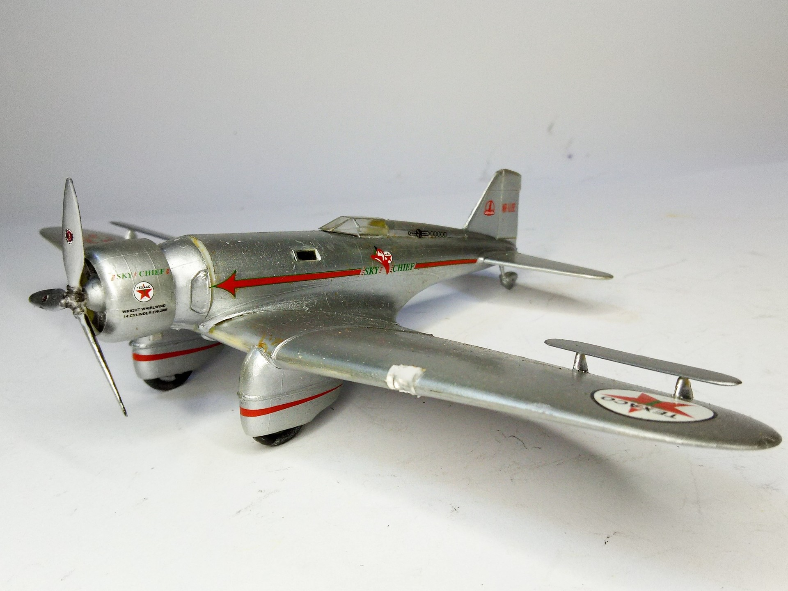
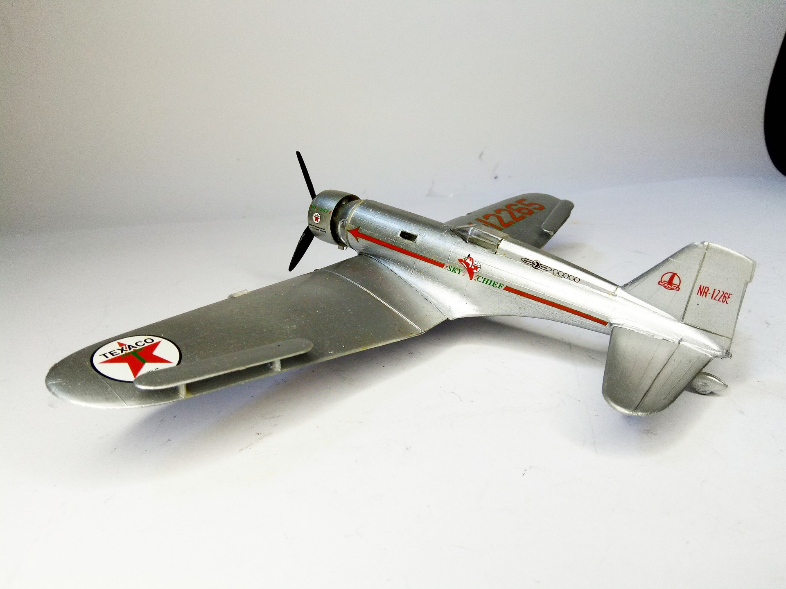

Aerei · scale model archive
Douglas/Northrop Gamma 2A "Sky Chief"
Douglas/Northrop Gamma 2A "Sky Chief" — Kit: Lines Bros, Scale: 1/72 #NorthropGamma. Frank Hawks flew his Northrop Gamma 2A "Sky Chief" from Los Angeles…

Photo gallery

English description
Frank Hawks flew his Northrop Gamma 2A "Sky Chief" from Los Angeles to New York in a record 13 hours, 26 minutes, and 15 seconds on June 2, 1933.
Model by Franco Donati
#1/72 #LinesBros #francodonati
Descrizione italiana
Frank Hawks volò con il suo Northrop Gamma 2A “Sky Chief” da Los Angeles a New York in un tempo record di 13 ore, 26 minuti e 15 secondi il 2 giugno 1933. Modello di Franco Donati.